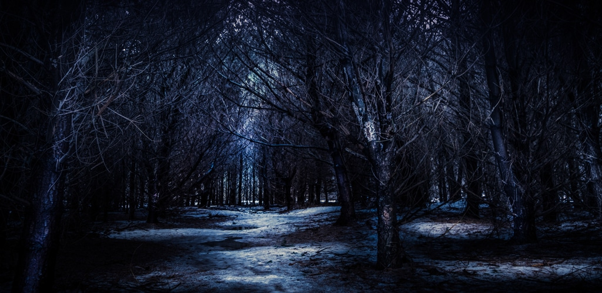
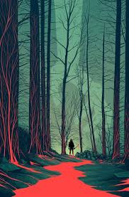
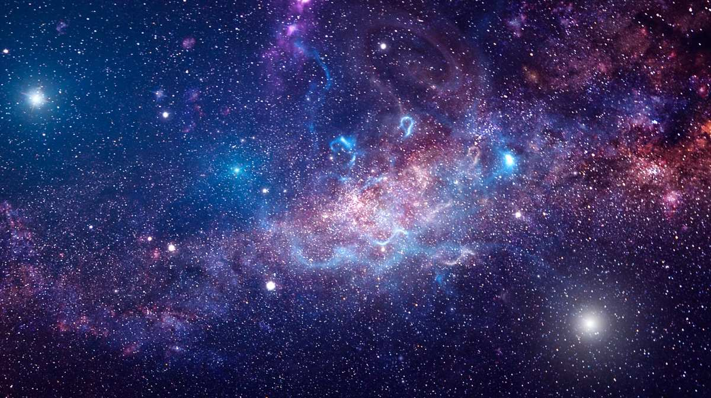
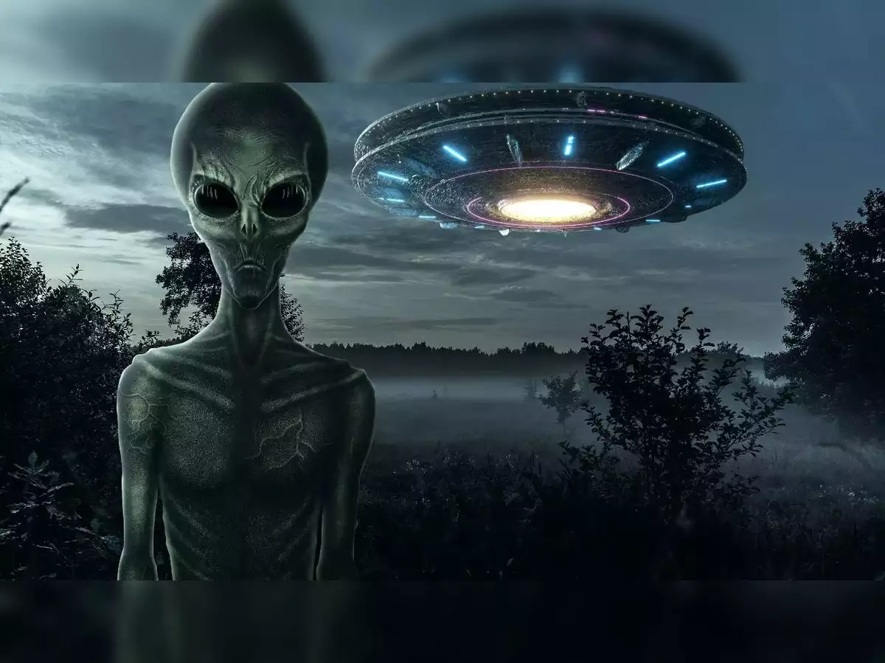
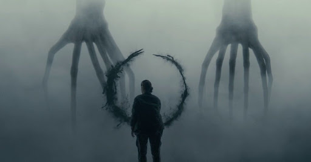
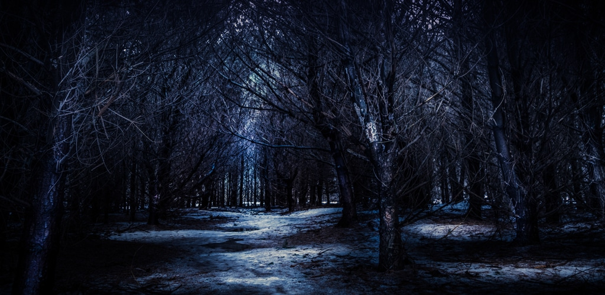
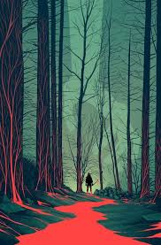
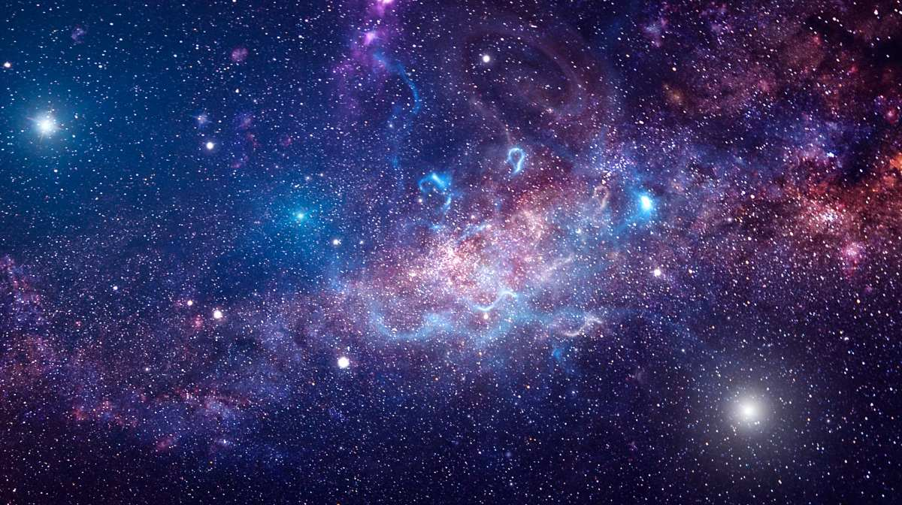
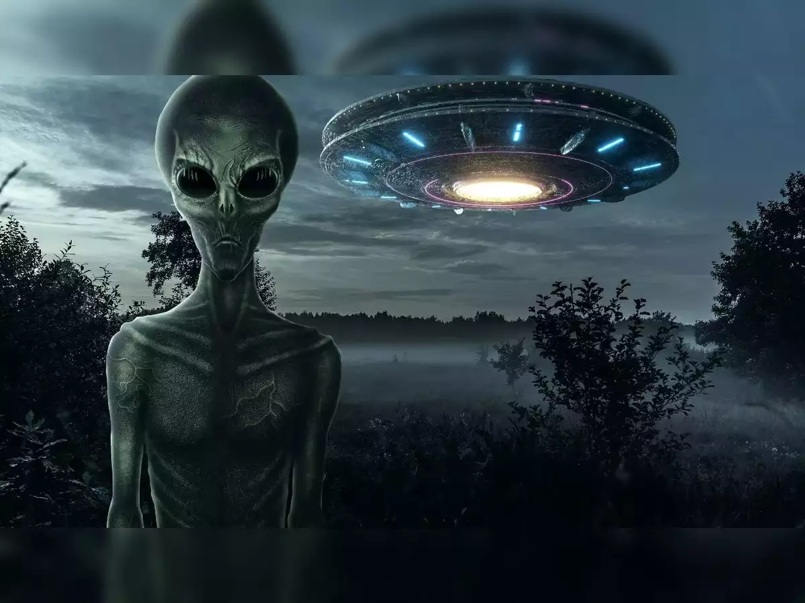
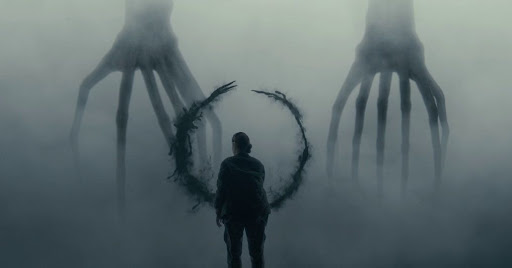
El bosque oscuro es la segunda parte de la trilogía de los tres cuerpos del autor chino de ciencia ficción Cixin Liu. Se trata de una novela notable, tremendamente creativa y que no deja de sorprender al lector, hasta el final.
El Bosque Oscuro es un lugar misterioso y lleno de secretos, donde la naturaleza parece cobrar vida y los límites entre lo real y lo sobrenatural se desdibujan. Este bosque, que se extiende por kilómetros, es conocido por su densa vegetación, sus senderos que parecen desaparecer en la espesura, y los sonidos extraños que se escuchan en la noche. En el corazón del Bosque Oscuro, se dice que habita una criatura mítica, una entidad que ha vivido allí desde tiempos inmemoriales, observando y protegiendo el bosque. Esta criatura, a la que los habitantes locales llaman "El Guardián", es tanto temida como respetada, y su presencia se siente en cada rincón del bosque. El Bosque Oscuro es un lugar de leyendas y mitos, donde los viajeros a menudo desaparecen sin dejar rastro y los habitantes locales cuentan historias de encuentros con seres sobrenaturales. A pesar de su reputación, el bosque también es un lugar de belleza y tranquilidad, donde los pájaros cantan melodías inolvidables y los arroyos corren con un murmullo suave. Para aquellos que se atreven a explorarlo, el Bosque Oscuro promete una aventura que nunca olvidarán, una mezcla de misterio, peligro y maravilla que solo puede ser experimentada en persona.
El Bosque Oscuro es un lugar de misterio y maravilla, un reflejo de la dualidad inherente a la vida y al universo. Este bosque, que se extiende por kilómetros, es un lugar donde la naturaleza parece cobrar vida y los límites entre lo real y lo sobrenatural se desdibujan. Aquí, la luz del día se mezcla con las sombras de la noche, y los sonidos de la vida se entrelazan con los murmullos del silencio En el corazón del Bosque Oscuro, se encuentra "El Guardián", una criatura mítica que ha vivido allí desde tiempos inmemoriales, observando y protegiendo el bosque. Esta criatura, a la que los habitantes locales llaman "El Guardián", es tanto temida como respetada, y su presencia se siente en cada rincón del bosque. El Bosque Oscuro es un lugar de leyendas y mitos, donde los viajeros a menudo desaparecen sin dejar rastro y los habitantes locales cuentan historias de encuentros con seres sobrenaturales. A pesar de su reputación, el bosque también es un lugar de belleza y tranquilidad, donde los pájaros cantan melodías inolvidables y los arroyos corren con un murmullo suave. Para aquellos que se atreven a explorarlo, el Bosque Oscuro promete una aventura que nunca olvidarán, una mezcla de misterio, peligro y maravilla que solo puede ser experimentada en persona. Este bosque es un símbolo de la dualidad y la complejidad de la vida, un lugar donde la luz y las sombras, el bien y el mal, se entrelazan en una danza eterna. El Bosque Oscuro es también un reflejo de la filosofía taoísta, donde la armonía con la naturaleza, la importancia de la sabiduría y la humildad, y la búsqueda de la verdad y la iluminación son temas centrales. Este bosque será un lugar de transformación y crecimiento, donde los personajes pueden encontrar la paz y la comprensión que buscan. En resumen, el Bosque Oscuro es un lugar de misterio y belleza, un reflejo de la dualidad y la complejidad de la vida, un lugar donde la luz y las sombras, el bien y el mal, se entrelazan en una danza eterna. Es un lugar de leyendas y mitos, donde los viajeros a menudo desaparecen sin dejar rastro y los habitantes locales cuentan historias de encuentros con seres sobrenaturales. Para aquellos que se atreven a explorarlo, el Bosque Oscuro promete una aventura que nunca olvidarán, una mezcla de misterio, peligro y maravilla que solo puede ser experimentada en persona.
En el Bosque Oscuro, la naturaleza parece cobrar vida y los límites entre lo real y lo sobrenatural se desdibujan. Esto plantea la paradoja de cómo la civilización, con su tecnología y su dominio sobre la naturaleza, puede coexistir con un lugar tan lleno de misterio y magia. ¿Cómo puede la naturaleza, que es a menudo vista como algo salvaje y desconocido, ser también un reflejo de la dualidad y la complejidad de la vida?
El Bosque Oscuro es un lugar donde la luz del día se mezcla con las sombras de la noche, y los sonidos de la vida se entrelazan con los murmullos del silencio. Esta paradoja invita a reflexionar sobre la dualidad inherente a la vida y al universo, y cómo la luz y las sombras, el bien y el mal, se entrelazan en una danza eterna. ¿Cómo puede un lugar tan oscuro y misterioso ser también un símbolo de la armonía y la interconexión de todo en el universo?
"El Guardián", la criatura mítica que habita en el corazón del Bosque Oscuro, es tanto temido como respetado. Esta paradoja plantea la pregunta de cómo una criatura que protege el bosque puede ser también una fuente de peligro y misterio. ¿Cómo puede "El Guardián" ser a la vez un salvador y un desafío para aquellos que se atreven a explorar el bosque?
El Bosque Oscuro es un lugar de leyendas y mitos, donde los viajeros a menudo desaparecen sin dejar rastro. Esta paradoja invita a reflexionar sobre la naturaleza de la búsqueda y la pérdida, y cómo la aventura y el misterio pueden llevar a los personajes a descubrir más sobre sí mismos y sobre el mundo. ¿Cómo puede la búsqueda de un tesoro legendario o de respuestas sobre el pasado llevar a la pérdida de todo lo conocido?
El Bosque Oscuro es un lugar donde los límites entre lo real y lo sobrenatural se desdibujan. Esta paradoja plantea la pregunta de si lo que experimentamos en el bosque es real o simplemente una ilusión. ¿Cómo podemos distinguir entre lo que es real y lo que es simplemente una manifestación de nuestra mente? Estas paradojas del Bosque Oscuro invitan a los lectores a explorar temas profundos y reflexionar sobre la naturaleza de la realidad, la dualidad de la vida y la interconexión de todo en el universo. A través de estas paradojas, el Bosque Oscuro se convierte en un espacio de reflexión y descubrimiento, donde los lectores pueden encontrar respuestas a preguntas que han estado buscando.
El Bosque Oscuro es un reflejo de la dualidad inherente a la vida y al universo. Este lugar es un símbolo de la interconexión de todo en el universo, donde la luz y las sombras, el bien y el mal, se entrelazan en una danza eterna. Este punto clave invita a los lectores a reflexionar sobre la complejidad de la vida y la importancia de la armonía con la naturaleza.
El Bosque Oscuro es un lugar donde la naturaleza parece cobrar vida y los límites entre lo real y lo sobrenatural se desdibujan. Este punto clave destaca la riqueza y la diversidad de la vida en e l bosque, así como la presencia de seres sobrenaturales y criaturas míticas que habitan en él.
El Bosque Oscuro es un lugar donde los límites entre lo real y lo sobrenatural se desdibujan, y donde la naturaleza parece cobrar vida. Este punto clave resalta la interconexión de todo en el universo, y cómo la naturaleza puede ser un reflejo de la dualidad y la complejidad de la vida.
El Bosque Oscuro es un lugar donde los límites entre lo real y lo sobrenatural se desdibujan. Este punto clave invita a los lectores a reflexionar sobre la naturaleza de la realidad y la ilusión, y cómo la experiencia en el bosque puede llevar a descubrimientos profundos sobre la naturaleza de la existencia.
"El Guardián", la criatura mítica que habita en el corazón del Bosque Oscuro, es tanto temido como respetado. Esta reflexión nos lleva a considerar la importancia de la protección y el peligro en la naturaleza, y cómo una criatura que protege el bosque puede ser también una fuente de peligro y misterio. ¿Cómo podemos navegar por el mundo con sabiduría, reconociendo tanto los peligros como las oportunidades que nos presentan? La sabiduría en la navegación de la vida puede ser un equilibrio entre la valentía y la precaución, una capacidad para reconocer y abordar tanto los desafíos como las oportunidades con una mente abierta y un corazón valiente.
El Bosque Oscuro es un lugar donde la naturaleza parece cobrar vida y los límites entre lo real y lo sobrenatural se desdibujan. Esta reflexión nos lleva a considerar la riqueza y la diversidad de la vida en el bosque, así como la presencia de seres sobrenaturales y criaturas míticas que habitan en él. ¿Cómo podemos apreciar y respetar la naturaleza en todas sus formas, y cómo podemos vivir en armonía con ella? La apreciación de la naturaleza puede ser un acto de reverencia hacia la vida y el universo, un reconocimiento de la belleza y la majestuosidad de la naturaleza que nos rodea.
El Bosque Oscuro es un lugar de leyendas y mitos, donde los viajeros a menudo desaparecen sin dejar rastro. Esta reflexión nos lleva a considerar la naturaleza de la búsqueda y la pérdida, y cómo la aventura y el misterio pueden llevar a los personajes a descubrir más sobre sí mismos y sobre el mundo. ¿Cómo podemos aceptar y abrazar la pérdida como parte del proceso de crecimiento y descubrimiento? La aceptación de la pérdida puede ser un paso hacia el crecimiento personal, una oportunidad para aprender y crecer a partir de las experiencias y las lecciones que nos ofrece la vida.
1. "El Bosque de los Perdidos" de Carlos Ruiz Zafón - Una novela que combina elementos de misterio, fantasía y reflexiones sobre la identidad y la memoria.
2. "El Bosque de los Sueños" de Carlos Ruiz Zafón - Otra obra del autor que explora temas similares, ofreciendo una visión más profunda de la naturaleza y la existencia.
3. "El Bosque de los Sueños" de Carlos Ruiz Zafón - Una novela que explora temas de misterio, fantasía y reflexiones sobre la identidad y la memoria.
4."El Bosque de la Noche Eterna" de Carlos Ruiz Zafón - Una obra que combina elementos de filosofía y reflexión sobre la naturaleza y la existencia.
5."El Bosque de los Sueños" de Carlos Ruiz Zafón - Otra obra del autor que explora temas de misterio, fantasía y reflexiones sobre la identidad y la memoria.
6."El Bosque de la Noche Eterna" de Carlos Ruiz Zafón - Una novela que explora temas de misterio, fantasía y reflexiones sobre la identidad y la memoria.
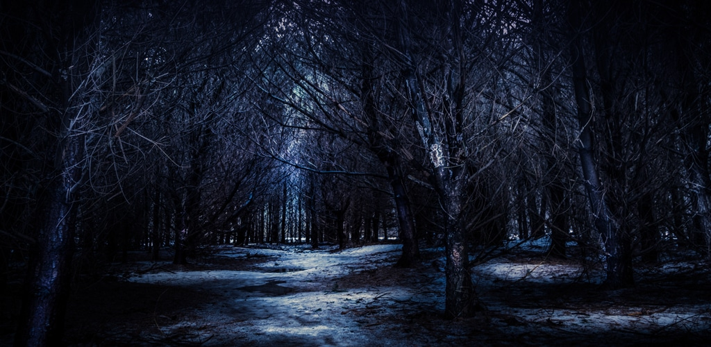
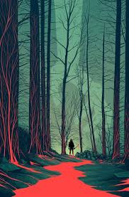
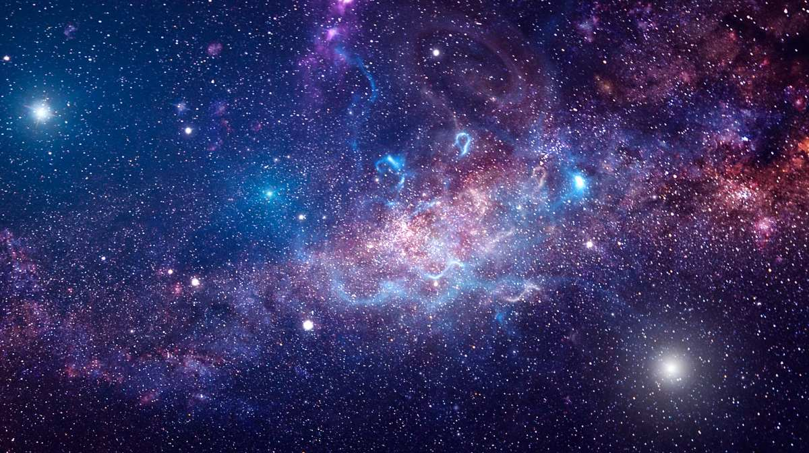
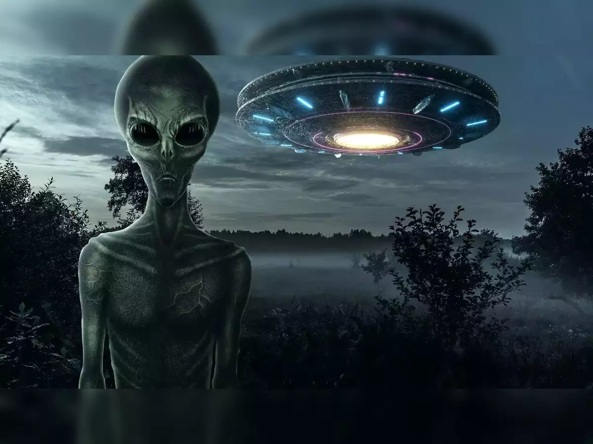
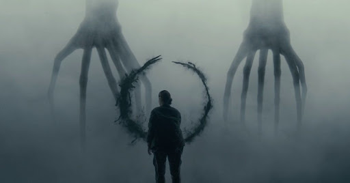